Context
DANA onboarding is the first moment where new users decide whether the app feels useful, easy, and trustworthy. Earlier onboarding research showed that users generally understood DANA as a digital wallet for cashless payment, but 5 out of 6 users skipped the introduction and directly tapped the phone number field because they wanted to register quickly.
Later registration research showed a bigger conversion problem: the overall registration conversion rate from Aug–Oct 2023 was around 51.3% and fluctuating downward, so additional research was needed to identify causes of drop off.
"Users wanted to move fast but the journey still needed to feel clear and trustworthy
"
The Challenge
A leaky funnel with no clear diagnosis. DANA was acquiring users but struggling to convert them. Registration completion was stagnant around 51%, and newly registered users weren't activating the features that mattered.
Registration drop off
The overall conversion rate for Aug–Oct 2023 hovered around 51.3% and was fluctuating downward. The team had no single clear cause — it could be OTP failures, UI confusion, or technical errors.
OTP friction
WhatsApp OTP was introduced as a security measure, but the Risk Team's data showed users were still dropping off even after the challenge was presented. Users weren't completing the step.
Unexplored feature space
DANA had an extensive feature set, but newly registered users had no guided path to discover it. Users frequently said they didn't know what to do after signing up.
"Most of the time we're too eager to ship a new feature rather than maintain or optimize existing features. DANA has too many features, but they're not explored enough by users
"
— Identified problem statement, IRA Workshop, March 2024
Five studies, four years, one picture
Rather than a single research sprint, this was an evolving body of evidence — each study building on the last to progressively sharpen our understanding of the problem thanks to our UX Researcher.
April 2020
Onboarding Revamp Usability Study
Unmoderated think-aloud sessions with 6 segmented users across age groups and digital wallet experience levels. Evaluated registration flow, tooltips, and what users did immediately after signing up.
October 2023
Registration Drop Off Desk Research
Triangulated survey data, Appbot negative sentiment review, and internal analytics to identify the top causes of registration abandonment. OTP issues and obscure error messages emerged as the biggest culprits.
November 2023
Newly Registered Users Top Use Cases
Internal data analysis tracking what users did immediately after registration vs. at 3 months vs. 6 months. Mapped acquiring use cases and fund use cases to reveal which features to surface first in onboarding.
Jan–Feb 2024
WhatsApp OTP Drop Off — Cold Call Study
CS team cold-called 186 users detected as having not completed WhatsApp OTP verification. Split between registered and unregistered users, this study pinpointed the exact failure modes in the OTP step.
March 2024
Install → Register → Active Workshop + Phone Number Survey
A cross-functional Design Thinking workshop (PD, UED, Marketing, Tech) to align on problem statements, ideate solutions, and create a prioritized roadmap. Complemented by a survey on phone number registration behavior.
What Research Revealed?
Recycled Number cause ghost account
A meaningful share of users didn't remember attempting to register — their phone number had previously been used by someone else or had been recycled by a telco provider
User wanted to register quickly
In the April 2020 usability test, 5 out of 6 users skipped the introduction and directly tapped the phone number field. One user thought the text was too long to read.
OTP was the largest friction point
The 2023 desk research found that users who failed OTP verification were mainly users who did not receive OTP or experienced slow loading. The 2024 cold call research also found that OTP had the most challenges: users did not receive WhatsApp OTP, preferred SMS OTP, failed when entering OTP, or entered expired codes.
81% use their own device's number
The vast majority of users register with the same number that's on their device — validating the decision to build a phone number suggestion shortcut in the keyboard.
High success rate doesn't mean registration success
In the age of information technology, there are a lot of malicious attempts on hacking in the e-wallet space. 100% success rate on registration can mean our risk team isn't doing its job because of bot activity.
First use cases shift dramatically over time
At registration, A+ Rewards and Other GN dominate. By 3–6 months, Mobile Telco Standalone, Insurance, and QRIS take over. This mismatch means onboarding shows the wrong features.
Ideation & Exploration
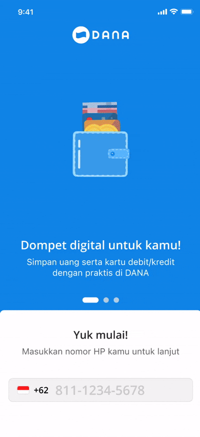
Onboarding Exploration 1
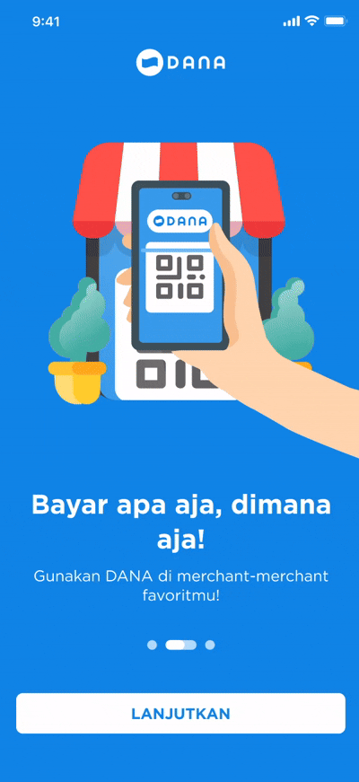
Onboarding Exploration 2
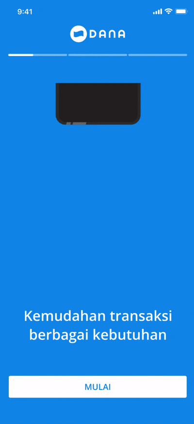
Finale Onboarding
The first design iteration explored a structural shift: moving the phone input field below the carousel so it's always reachable without completing the intro. Richer, more specific illustrations replaced the original abstract graphics. Messaging was rewritten in plain language based on exact user vocabulary from the usability sessions. In the end, we want it to be less clutter as it can be and chose the third design
The initiatives to speed up OTP Process
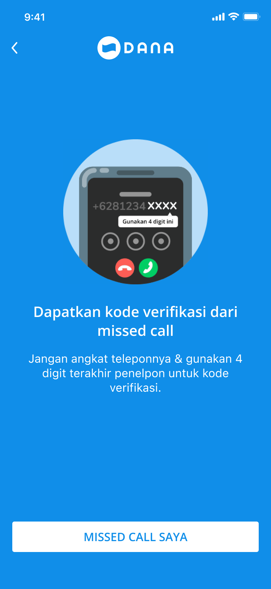
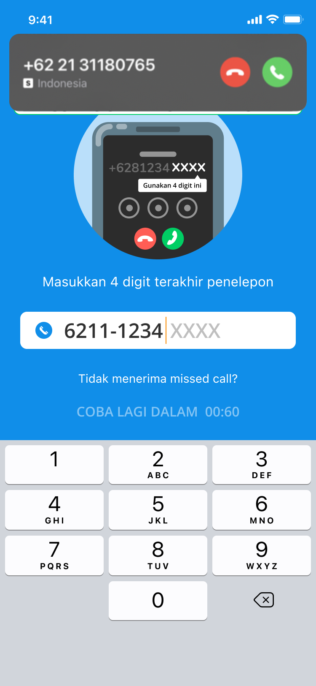
Citcall
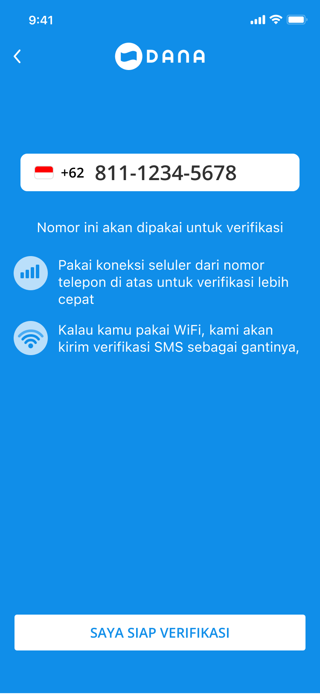
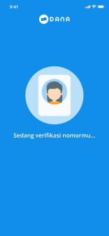
Boku
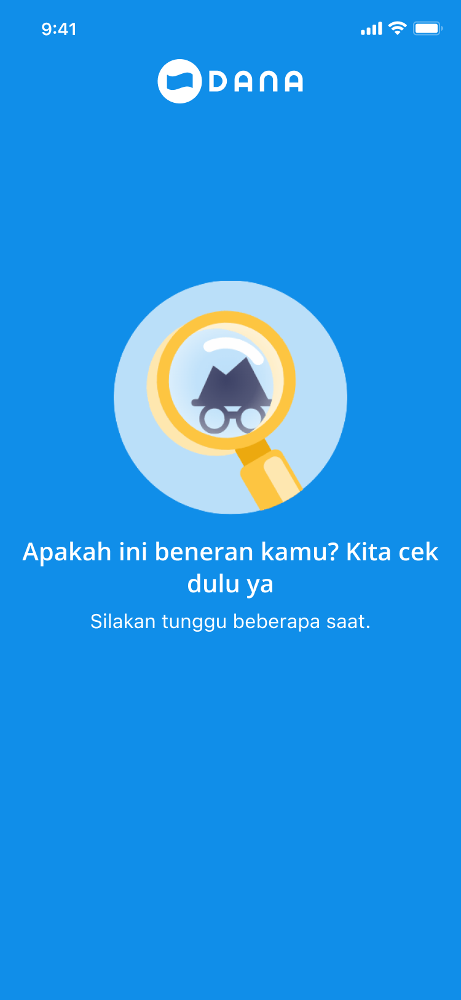
Akamai
We also notice that there is a lot of opportunity on cutting down steps and cost cutting for OTP. From our research, OTP is the largest friction points when user wants to register, either its because the OTP SMS is so slow or they don't receive at all. so there's an opportunity for us to explore other alternatives that has a better success rate and also better experience.
Helping User on inputting their phone number
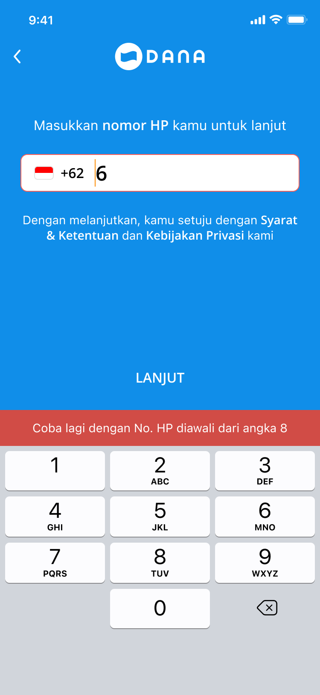
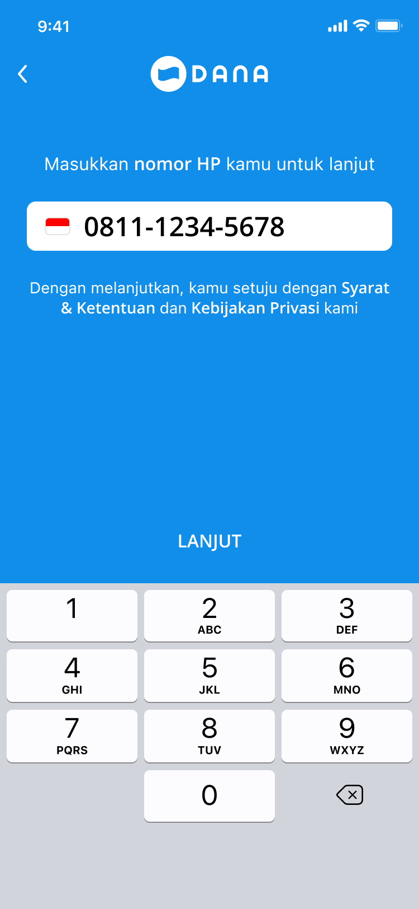
If user press a prefix other than "8" or "0"
If user press 0 rather than 8, the "+62" will change into 0
What changed and why
A direct comparison of design decisions across the key screen on the original onboarding, the ideation prototype, and the final design — each change linked to a specific research finding.
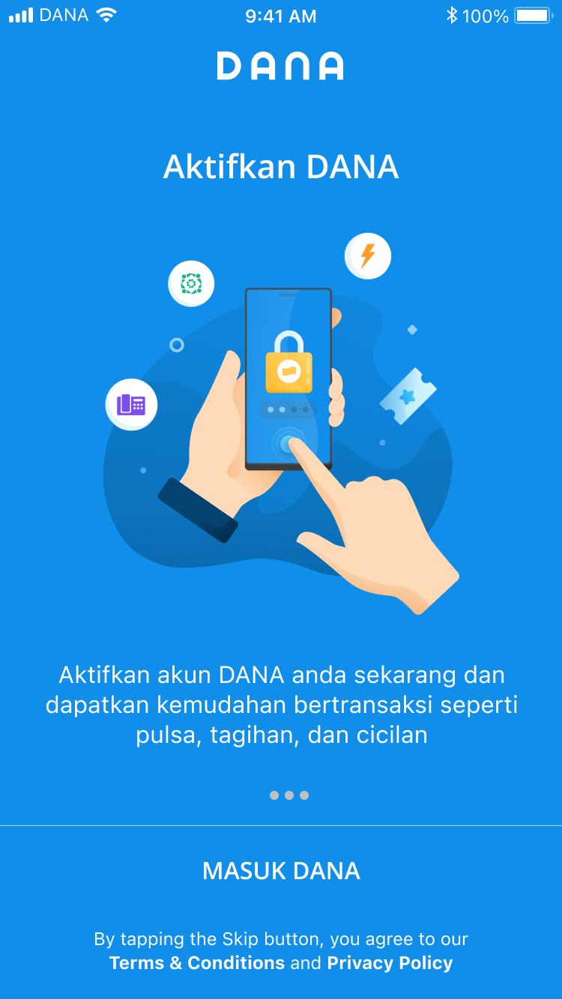
Onboarding v1
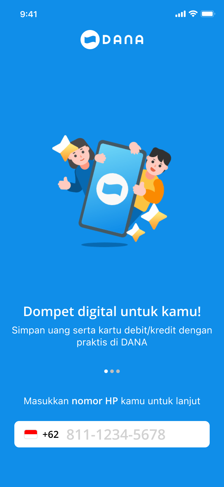
Onboarding v2
Current Onboarding
From feature showcase to first impression
One of the clearest patterns in our research was that DANA had a tendency to introduce new features before the existing journey was fully resolved. The onboarding screen became a symptom of this — by the time users landed on it, they were already being sold a product they hadn't yet decided to trust.
This informed the decision to strip the onboarding down to its core purpose. The current design removes the feature-selling layer entirely and replaces it with a single, clear value statement and one action. The reasoning is simple: a user who hasn't registered yet doesn't need product depth — they need enough confidence to take that first step. Everything else can wait.
Previous (v1 & v2)
Mixed intent — promotional copy and a phone input on the same screen split user attention before trust was established.
Current design rationale
One message, one action. Deferred feature discovery to post registration, where it's actually relevant.
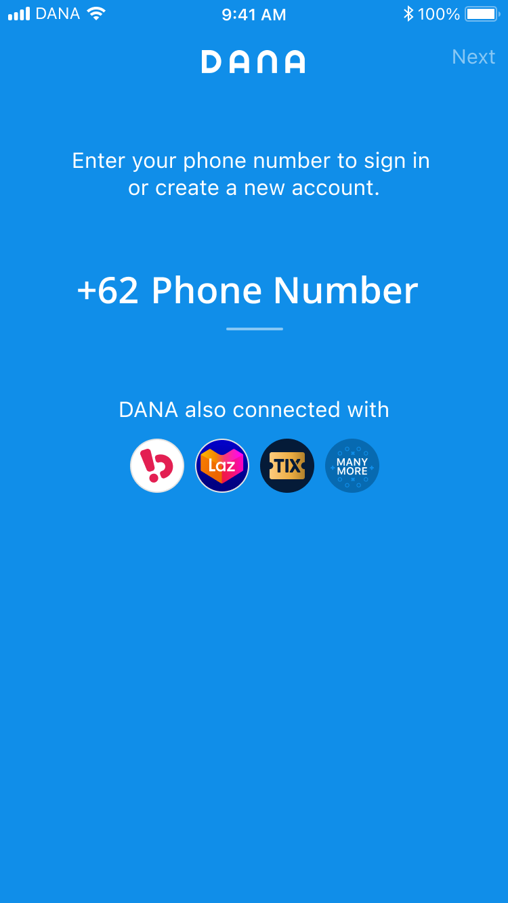
Input Phone number v1
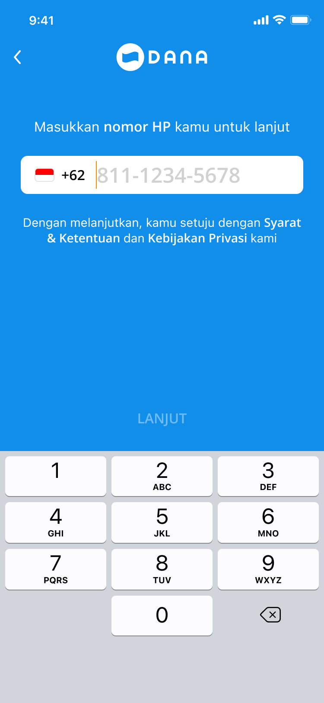
Input Phone number v2
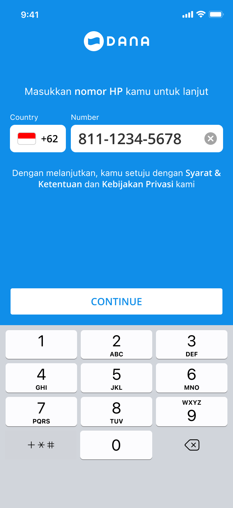
Current Input Phone number
Removing a silent source of confusion
The data told a story that wasn't immediately obvious from looking at the screen: 81% of users registered using their own device's phone number. That should have made this step frictionless. But it wasn't — because the input field didn't make it clear whether users should include or exclude the leading zero when typing after the +62 prefix.
The current design resolves this structurally — not with hint text, but by separating the country code into its own labelled field. The user now sees "Country" and "Number" as two distinct inputs, which implicitly communicates that the prefix is already handled. The addition of a clear (×) button addresses a secondary finding: on a numeric keyboard, mistyping is common, and users were abandoning rather than correcting.
Previous (v1 & v2)
A merged +62/number field left users guessing about the correct format — a small friction that compounded into real drop off.
Current design rationale
Structural separation of country code and number. Ambiguity resolved by layout, not copy.
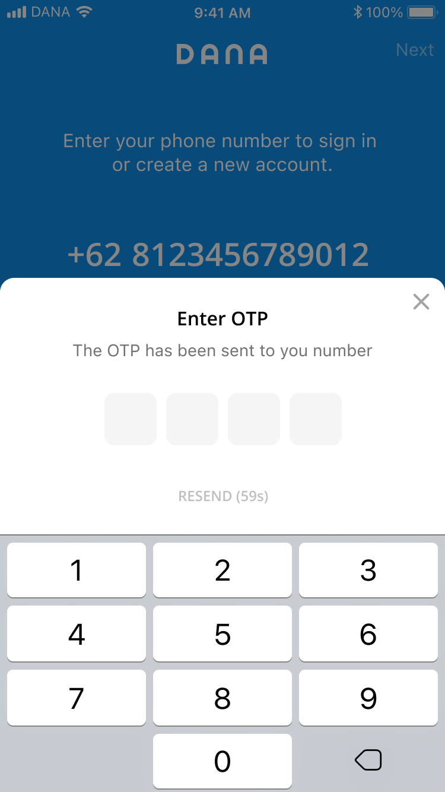
Input OTP v1
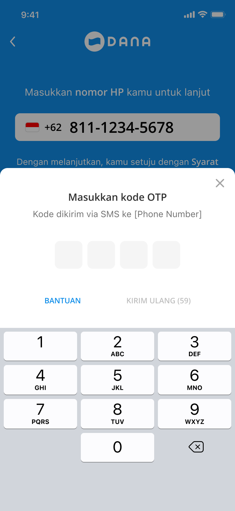
Input OTP v2
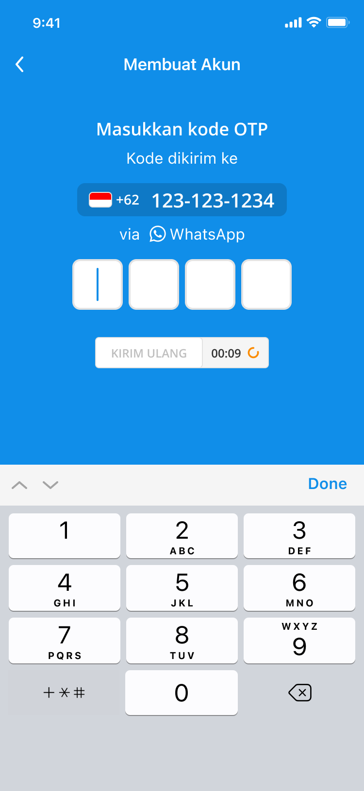
Current Input OTP
The biggest drop off point
OTP was where we lost the most users — and it wasn't because the concept was unfamiliar. It was because three separate problems were converging at the same moment in the journey: users didn't know where the code was being sent, they couldn't tell how long they had to enter it, and when it didn't arrive, they didn't know what to do next.
The current design addresses each of these individually. Explicitly stating "via WhatsApp" beneath the phone number sets the right expectation before the user even leaves the screen. The visible countdown timer ("00:09") gives users a concrete signal that the system is working and tells them exactly when they can request another code. The always visible resend link (KIRIM ULANG) removes the moment of uncertainty that was causing users to abandon instead of retry.
Previous (v1 & v2)
No delivery channel stated, no time signal, and a buried resend action — three compounding uncertainties at the most critical step.
Current design rationale
WhatsApp delivery stated upfront. Countdown timer as a trust signal. Always-visible resend link to prevent abandonment.
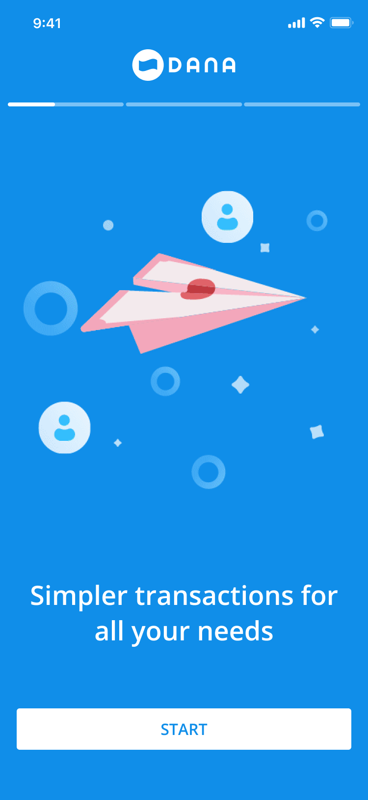
Welcome
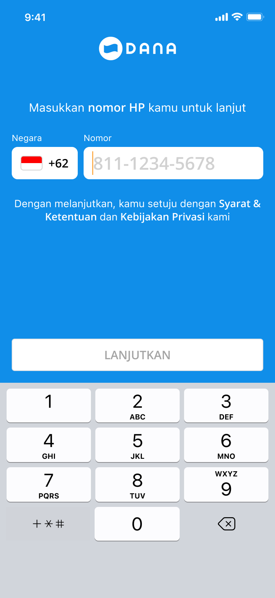
Phone Number
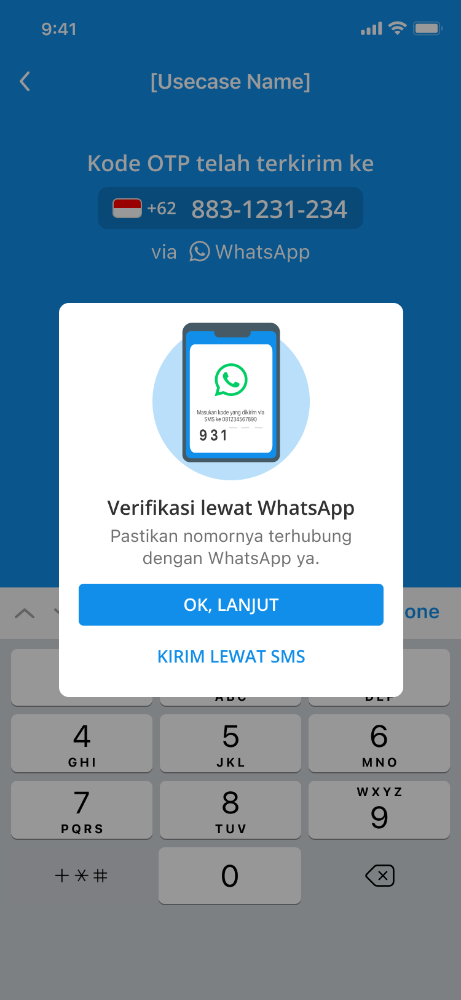
WhatsApp Confirmation
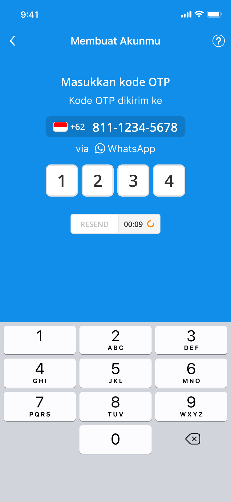
OTP Verification
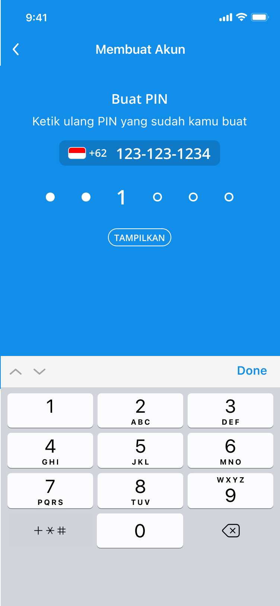
PIN Creation
Welcome Back
Overall Onboarding Registration Journey
The flow treats every screen as an opportunity to answer the question the previous one raised. The welcome screen earns trust before asking anything. The phone input removes format ambiguity through structure rather than instructions. The WhatsApp confirmation sets delivery expectations explicitly, so users know exactly where to look for their code. The OTP screen restates those expectations and adds a countdown timer — converting a moment of silence into a visible signal that the system is working. PIN creation reframes a security requirement as a personal action. And the welcome screen closes the journey with a clear sense of arrival.